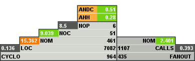

WTF is that?
We'll start from an image. Did you see in past something like that?

This is called Overview Pyramid. This is, I think, most commonly used visualization of Object oriented metrics. What are they?
Metrics in short, are some kind of numeric values, describing code (there is also a possibility to describe classess without code
using for e.g. UML), or in Object Oriented Metrics, describing classess. It might be easier to describe it on an example. Let's take
simpliest metric - LOC (Lines Of Code), which is also seen on an overview pyramid. This metric describes how many lines of code
are in all defined methods.
Ok, but why do we need them?
During my career I found myself in many situations that I had to review people's code. And I have to say I'm getting really often angry
on what I see. Code likes to be really unreadable - lot's of if instructions, hellish long methods, everywhere high coupling (sometimes
I think people don't know what's an DI, they just heard it it's fashionable in new frameworks but what the hell... I don't need it!).
This might be because mostly I'm used to look into PHP/JavaSript code and I think these languages are really really bad for person which
learns programming.
Additionally I saw also people using for e.g. 'Design Patterns' without any knowledge about them. The're used only for the sake of
using them. And this is make you more problematic to mainain the code than just have it done simple.
Personally I think that people before starting to learn about Design Patterns should read about something that is called Design Disharmonies.
These disharmonies are a bad thing in programming world and you should avoid them to maintain your code readable and maintanable. They
are called bad smells.
Still don't know why do I need these metrics them?
Ok, so if your code grows really big, you need to use more and more time only to verify the code base. If it's really huge then detecting such a
disharmonies is really hard work. Then the metrics are handy. Using them you can detect bad smelling code and verify if somebody really left some bad suprises.
So what's with Overview Pyramid (Watch out! Yet another boring explaination)?
Let's get back to Overview Pyramid. There was one metric already described as an example: LOC. But we have here also other ones:
CYCLO - Cyclomatic Number. This number counts all possible paths that it can take. For e.g. if instruction
will increase this number by one, cause program can go though this if or not. Of course bigger value means higher complexity, which in many
cases might be bad.
Further on the left side you can find NOM - Number Of Methods, NOC - Number Of Classess and NOP - Number Of Packages, depending
on which language it can be Package (Java), Module (Python, JavaScript), Namespace (C++, PHP) etc.
How to read them? Number on the right of metric is value of this metric. Number above the metric is more important - it's a ratio of a metric
divided by next metric. For e.g. using previous image:
LOC/NOM = 7082/461 = 15.362
As you can see this value is shown on green - it means that's too high. Code for which this image was generated had too long, not specialized methods.
For the rest metrics calculations are analogical.
Whole Overview Pyramid is divided into 3 parts:
- One, already described tells about Size and Complexity
- Right one (FANOUT, CALLS, NOM) tells about Coupling between classes.
- Upper part (AHH, ANDC) tells about bad smells in Inheritance tree.
Based on these number you can think how to refactor your code, to be more maintanable and clearer.
It's possible to generate such a diagram using for e.g. PHP_Depend, for Java you can use Cultivate, inFusion plugin for Eclipse.
Heart of the problem - Disharmonies
As said using metrics it is possible to detect anomalies in code. Such an anomalies are divided into 3 groups:
- Identity Disharmonies
- Colaboration Disharmonies
- Classification Disharmonies
These ones should be remembered! You should watch out for them. I will shortly describe them by saying few words about their opposition - Harmonies.
- Identity Harmony means that every entity is justified. All entities have their meaning and are specialized in what they're doing or they're representing.
In practice you can say that class should have compact interface, also data and operations should collaborate with each other (for e.g. no data that is not
used by any of the methods), methods should be cohesive.
- Collaboration Harmony describes how entities are interacting with each others - if they're not communicating with too many other entities, or if entities
are not doing too much work (so do not use too many services, but also do not do everything alone).
- Classification Harmony focuses on inheritance. Tells if entities are justified in inheritance tree.
All the artfacts of a system should be in harmony.
So now the disharmonies. Of course they should be avoided, cause they make the code smelling bad - mostly they show that system is designed against
the OOP rules. An example of such disharmony is God Class. Such class have a set of different methods, which are not cohesive (cohession means
that methods use the same class attribute) and are not compact. Such a class is not defined correctly cause does not represent real entity and
takes too much responsibility on itself. These classes often have more than 1000 lines of code. Maintaining such a class is really hard
because of it's complexity. God Class should be divided into smaller entities which will be specialized in what they're meant for.
Other disharmonies are be:
- Feature Envy - objects instead of using their own data, tend to use data of other classes (accessors also count!)
- Data Class - objects which are really structures. They have data but no encapsulation or interface to work on this data.
- Brain Method - mostly occures in God Class. It's a huge method that mixes different functionalities and tries to solve more than
one small problem.
These ones are only examples, because there are many more. To know about other ones I
suggest reading Object Oriented Metrics in Practics by Michele Lanza and Radu Marinescu. Knowing them will make you write good Object-Oriented code.
Uff... that's the end for now. This post started to be too long. I will later continue disharmonies topic in separate article to say about them a little bit
more - how to detect them, how to get rid of them.
There are comments.